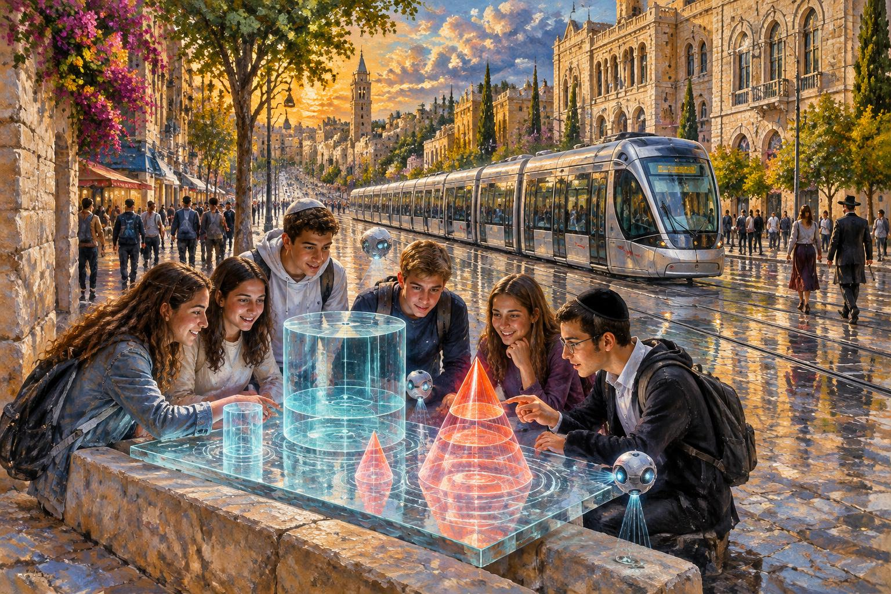

מנח״י◆מחוז ירושלים והעיר ירושלים
גליל
מתמטיקה פוגשת את רחובות ירושלים
דפי עבודה בגיאומטריה · כיתה ח׳
V = π·r²·h·S = 2·π·r·h·B = π·r²
יניב רז — מדריך מחוזי חט״ב בעיר ירושלים
הדרכה במחוז ירושלים והעיר ירושלים - מנח״י, בהובלת איילת קריספין